← 返回阅读库 · 原论文目录
论文讲解阅读文档 · 新模型 · v086
Deformable Convolutional Networks; DCN[1703.06211]
视频时长 00:09:51；讲解文字 4,676 字符；提取讲解画面 15 张。按视频原顺序阅读，每段文字保留时间戳。
文字来自整段视频的自动语音转写，按自然停顿分段，并与 PPT / 论文页面 / 演示画面对齐。未将讲解压缩为摘要；术语、数字和口述公式请结合画面及原论文核对。 阅读稿已校正规范部分明确术语误识别；原始逐字稿和每处修改记录另行保留。
讲解画面为源视频截图（640×360），不是可编辑 PPT 文件。全片按每秒 2 帧扫描内容变化，逐步展开页保留；连续动画保留代表画面。清晰度受源视频限制。
下载完整资料包 · 含离线 HTML、PDF、Word、全部 PPT 画面和字幕。
原论文与材料
Deformable Convolutional Networks · 下载完整 PDF（12 页）
按时间阅读
00:00:00–00:00:14 · 画面 001
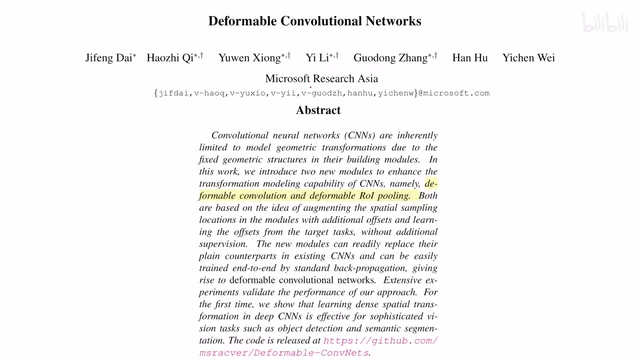
00:00:00–00:00:14 · 画面 001大家好啊，今天我们来快速数一篇论文，deformable convolutional networks，这篇文章也是一个很经典的工作了，它的主要贡献包括两个部分，就是 deformable 的 convolution 和这个 deformable 的 ROI pooling。那我们下面直接来看，首先是这个 deformable convolution，我们来看到这个示意图，这边是一个老实人经典的三乘三的一个 convolution，每一个 convolution 计算的时候输入呢是这些绿色的部分
00:00:14–00:01:12 · 画面 002
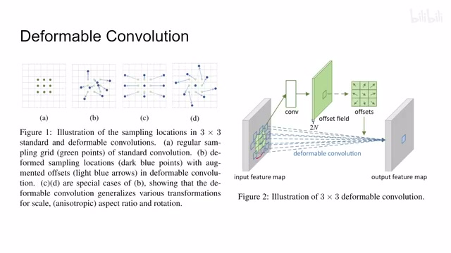
00:00:14–00:01:12 · 画面 002显然 ，pattern 是固定死了，它就没有那么灵活，所以本文提出的 deformable convolution 就是我虽然也是做 9 个点的 convolution，但是 convolution 具体采的像素的位置是可以变化的，所以它叫可以变形的 deformable，当然它变形的量是我们通过学习根据输入的数据得出的，这里列了两种特殊的情况，告诉我们 deformable 它的好处是什么，比如说这个它就很像 DeepLab 里面 Atrous convolution，就是我的 kernel 很大，但是每个点之间有间隔对吧，这是这种，然后这个示意图表示如果需要的话，它可能变成一种旋转，当然这都是作者的美好的设想，那么我们下面具体来看作者的一个实现
00:01:12–00:03:12 · 画面 003
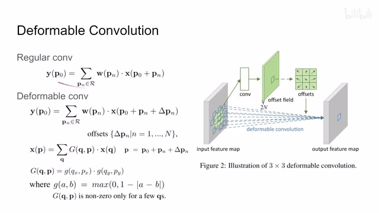
00:01:12–00:03:12 · 画面 003那首先一个常规的 convolution 它是什么样子呢？那假如说我们有一个像素 P0，那么它就是使用了 P0 及其他周边的像素的一个加权的和嘛。那这个权重在这里 PN 就是相对于 P0 我的这个像素点距离这个 kernel 的中心它的一个偏移，那么你可以看到 PN 属于这个 RR 这里并不代表实数，它是一个集合。那比如说你是一个 3x3 的 kernel左上角的 pn 就是-1-1，右下角的 pn 就是 1 1 这样子。一个常规的 convolution 它就是一个加权的和，而且它每次采数据的位置是固定的，就是不管你的输入数据是什么样，它每次都从那几个位置采。这个是常规的 convolution，然后就是本文提出的 deformable convolutiondeformable 就是在我常规的采的位置的基础上，我加一个 pne，让我们采的像素点跑起来
那这个偏移的这个量呢，它不一定正好是个整数嘛，那那我们像素值怎么决定呢，这里呢把整个这一串替换成一个这个 P 啊，可以看到它怎么计算的呢，它是把这个 P 周围的几个像素也是通过加权求和的方式，这个权重呢是这个 G 来决定的，那么这个 G 呢我们来看它是两个部分，分别是就是我们参考点的这个 Q 点的它的 X 坐标和我们的这个 P 的这个 X 的坐标还有他们的 Y 坐标这么一个对比，也就是在这个小 G 这个 X 坐标和 Y 坐标都有这个值的情况下都大约 0 的情况下那么这个 G 才是有效的，才是成立的，那这个小 G 怎么计算呢，我们来看到这里，那其实它就是一个根据坐标来决定权重的这么一个东西，你可以看到这个是我们这个 P 点大家比如说它的一个坐标和我们另一个采样点这个 Q 点它的这个坐标坐标的这个 X
那这个差值绝对值嘛被 1 减，所以它最大可能也就取到这个 1 了，那所以整个这个式子的意思其实就是距离我这个 P 点它周围横纵坐标都在一个像素以内的这么一个点，然后呢根据这个权重算出来啊作为我们这个 deformable convolution 它踩的某一个点的这个具体的像素值，那到这里呢我们的设想很美好了，就是就是我们的 convolution 常规做
00:03:12–00:03:42 · 画面 004
00:03:12–00:03:42 · 画面 004但是它输入的点呢其实在原始的点的位置上做了偏移，而这个偏移之后它可能不是一个整数，那我们就用周围的四个像素的这个加权的和来代替，那么下面一个很重要的问题就是这个神奇的方法怎么得到这个 offset 呢，那我们看到这边这个图其实也很简单，就是原始的这个输入的图像对吧，一个 convolution 出来 2n 个这个 offset field
00:03:42–00:03:43 · 画面 005
00:03:42–00:03:43 · 画面 00500:03:43–00:03:50 · 画面 006
00:03:43–00:03:50 · 画面 00600:03:50–00:04:28 · 画面 007
00:03:50–00:04:28 · 画面 007那为什么这里是 2n 呢？你想，我们下面这个 deformable convolution 对于每一个点来说，它需要输入 n 个这个周围的点作为输入嘛。然后每一个点呢，它有 xy 两个坐标，两个坐标都要有偏移。所以呢，这 2n 的 channel 代表是这一个点的 n 个输入点，每一个的 xy 坐标的偏移量。很简单就是一个 convolution layer 就处理了。然后呢，根据它变形成这个 offset 来控制我们这个 deformable convolution。
最后呢，把这个 ng 样本拿进来，然后做一个标准的 convolution 就可以了。那这个是 deformable convolution。那所以这里我还要说这是 self-attention，因为它的这个模型的采样的这个方法就是这个 deformable convolution。它出来的这个值不只是一个从固定位置上采的值。那它采的方法呢，是根据我们输入的这个数据过了 convolution 算 offset 等等等等，根据我们输入的数据来决定的。说明我们的输入数据既决定了我们输入的值是什么样的，同时也决定了我们去采哪些输入。所以呢，它算是一种 self-attention。
00:04:28–00:04:29 · 画面 008
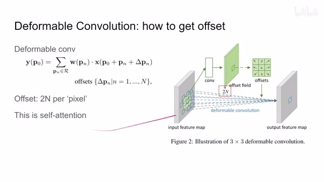
00:04:28–00:04:29 · 画面 00800:04:29–00:04:57 · 画面 009
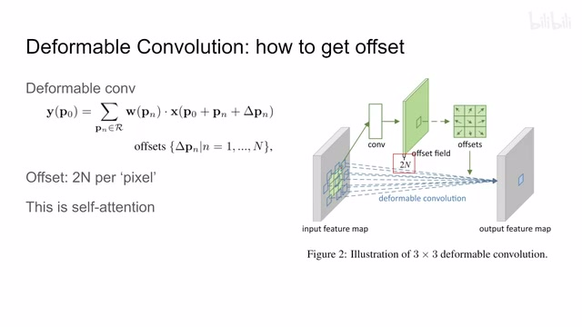
00:04:29–00:04:57 · 画面 009那这个呢，就是 deformable convolution 很直接的一个设计。
00:04:57–00:06:57 · 画面 010
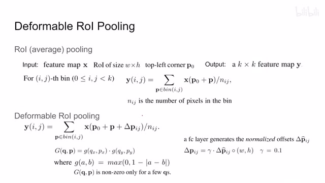
00:04:57–00:06:57 · 画面 010那么再往下呢，作者还介绍了这个 deformableROI poolingROI pooling 对吧？这个做 R-CNN、Fast R-CNN 这些东西朋友很熟悉了。那本质来说，就是我们在做目标检测的时候提了很多的这个 proposal，这个各个窗口嘛。然后每个窗口呢，它们大小尺寸不一样，对应的 feature map 呢又不一样。那这就很不方便我们后面处理了。那怎么办呢？我们把 proposal 跟我们真正的 feature 相结合，结合完了之后呢，做一个 pooling 用 pooling 这个操作。
把不论各种什么大小的 input feature 都给它做成相同尺寸的大小。这样子后面操作就很方便了，对吧？这个就是 ROI pooling。我们来到输入对吧？我们有一个 feature map，然后我们的 ROI proposal 它的区域的大小还有它这个区域在哪个位置对吧？这是输入的情况。输出我们希望所有的不管区域大小各种 proposal 它都输出一个 kxk 的这么一个 feature map。那么怎么操作？很简单就是我们把输入的 feature mapW 乘 h 尺寸里面的这块 feature map 给它分。
分成了很多 bins、bins 你就想是一个小块区域。然后 bin 里面所有的像素这里作者直接是求和然后求平均，就是一个 average pooling。这么每一个 bin 出来一个值，一共有 kxk 个 bin 对吧？就是 kxk 个 feature map。这个就是 average pooling 就是 ROI pooling。那么下面作者就要把它变成 deformable 了，就是让它也能够变形。
那怎么做呢？很简单，我们在正常计算 ROI pooling 的时候对吧？一个大的 ROI w 乘 h 的这么一个 ROI，我们是把它分成了 k 乘 k 个区域，一个区域就是一个 bin，一个 bin 紧挨着一个 bin 对吧？那 deformable 意思就是每个 bin 呢能够活动起来啊，我不一定是在一个固定的区域里面踩我这个 ROI pooling 啊，我可以让这个区域稍微在周围移动一下啊。这个呢就是这个 deformable ROI pooling。那具体来看就是我的 bin 里面的每一个像素。
全部加上一个固定的这么一个 offset，那这就让整个并平移起来了。那么当然加上之后这个值也不一定是一个整数对吧？很有可能是个浮点值。那具体的每个像素该怎么取值呢对吧？还是跟刚刚 deformable convolution 一样，一个周边的四角而近似啊就可以做到了。那同理这个 offset 怎么来啊？这里做着用一个 fully connected layer 用你现在的这个数据来给它规划出一个 offset 就好了吗？
00:06:57–00:07:39 · 画面 011
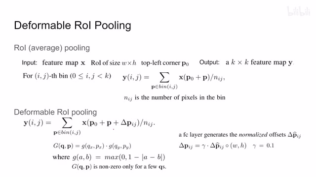
00:06:57–00:07:39 · 画面 011那注意这里呢，我们的规划这个 offset 的过程中呢，我们规划的是一个 normalize offset 就是从 0 到 1 的，然后它之后呢再乘以这个 proposal 的宽和高再乘以这个 0.1 来约束一下它的这个漂移的这个范围。这样子呢就无论这个 proposal 的尺寸大小，我们都可以得到一个满意的 offset。这个呢是区别于这个 deformable convolution 的一个小的细节。
那么在实际应用过程中，我们有效果更好的 Position-Sensitive ROI pooling，它的核心思想就是既然我们每一个 Proposal 都要输出一个 K 乘 K 的这么一个 Feature MapK 乘 K 里面的每一个 Value 它不一定来自于同一个 Feature。现在我想让它们分别保留不同的信息，怎么办？这里我们在 Feature Map 后面再加了一层。
00:07:39–00:09:04 · 画面 012
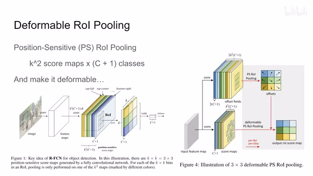
00:07:39–00:09:04 · 画面 012既然我们最终的输出是 k 乘 k 个 feature，所以这里 k 乘 k 的 feature 就一共有 k 平方的这些像素的值，这是一个乘数，然后我们分类。分 c 个类，那再加上一类没有 object 这个类，一共是 c 加 1 类。每一类都需要一个 feature。那这样子呢，我们通过一个 convolution 把我们原来这个 feature map 升到这个 k 平方乘以这个 c 加 v 这个维度。那其中每一个 c 加 1 的 channel 就对应我们最后 pooling 出来的一个像素上的位置。那么让它变得 deformable 也很简单，对吧？我们把刚刚的对一张通道做的事情扩展到这个 k 平方 c 加 1 的通道上就可以了。
那因为我们有这么多通道，每个通道需要规划两个 dimension，就是横轴和纵轴的这个 offset。所以呢，这里要再次乘以 2，得到一个我们想要的 offset。然后呢，在最终做一下这个 ROI pooling 就可以了。那么这个就是作者提出的 deformable ROI pooling。整体来说呢，这个设计是非常简单的，给我们的模型的自由度呢也很大。那么后面一点 visualization 呢，我们也可以看到啊，我们的这个经过变形之后。
00:09:04–00:09:26 · 画面 013
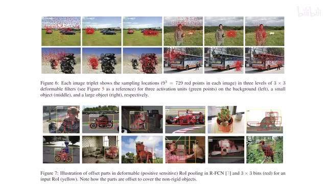
00:09:04–00:09:26 · 画面 013上面是我们的 deformable convolution 都注意到哪些点大部分都是在一个有意义的物体上面的像这样的例子那么下面是我们 roi pooling 对吧他注意到了 roi region现在都集中到了目标物体的周围，这是一个很直观的一个 Visualization。那么在后续作者还对当前的设计做了改进，主要是因为现在设计过于自由，有时候我们变形过后可能就去到了其他的物体上了，过得太远了等等。那么对于当前工作的一系列的分析和改进，作者在 Version 2 里面都总结了，感兴趣的朋友非常推荐你去查看。
00:09:26–00:09:51 · 画面 014
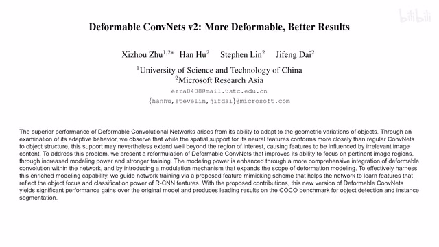
00:09:26–00:09:51 · 画面 014好的，那么以上就是我对这个 deformable convolution 的一个快速的一个介绍啊。那么感谢您的收看，再见。
00:09:51–00:09:51 · 画面 015
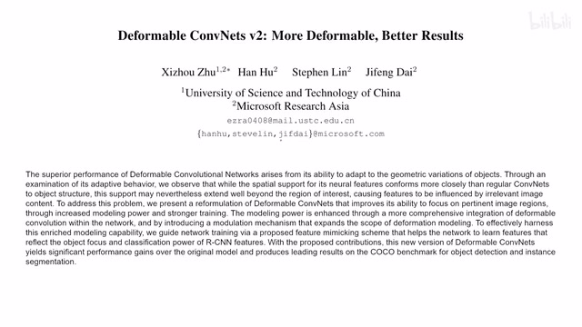
00:09:51–00:09:51 · 画面 015转写与来源说明 · 0 个自动复核提示
保留 29 个原始语音片段，0 个片段触发自动复核提示。提示仅用于定位可能的术语、重复或识别问题，不等于已确认错误。
讲解画面为源视频截图（640×360），不是可编辑 PPT 文件。全片按每秒 2 帧扫描内容变化，逐步展开页保留；连续动画保留代表画面。清晰度受源视频限制。
原视频：paper/合集_2026-10-16_新模型/[论文速览]Deformable Convolutional Networks; DCN[1703.06211].mp4
SHA-256：a5b2939c849ea20cbc3e6e231734cafb42222541b4f7d3cc77d20b88968907cc
全文按视频语音与画面制作。原论文可从上方链接下载；完整资料包保留全文、原始逐字稿、字幕和校对记录。